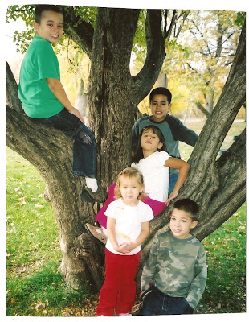

The center of our universe (from upper left): Isaiah Athanasius, William Wallace, Katrina Antigone, Sophia Faith, and Jefferson Leonidas.
"Grab some clothes and get into the van, now."
For an instant, that directive, and the tone in which it was issued, had the opposite of its intended effect: Korrin and our five older children, momentarily paralyzed by shock, looked at me in alarm. There was something in both the tone of my voice, and the expression on my face, that was new and a little frightening. None of them had seen my "game face" before. They were seeing it now.
Just seconds earlier, Korrin and I had been confronted on our doorstep by two very nice, well-dressed women who informed us that an anonymous "child endangerment" complaint had been filed with the Child Protective Services.
One of the visitors was a social worker we've known for several years, and consider a friend. The other was a stranger who introduced herself as a CPS investigator. She intended to inspect our home and speak with our children.
After being summoned to the doorstep, I had ushered our children into our house and closed the door behind me. Short of being removed by force, there was no way I was going to permit a CPS investigator to have access to our home as long as our children were vulnerable to government abduction.
"You seem like a conscientious and well-intentioned person," I quietly told the investigator, "but this is an adversarial situation, and I can't allow you to have access to my home in the absence of a warrant, and until I've consulted with legal counsel."
Although this clearly wasn't the response she had expected or desired, the investigator retained her professional composure.
"Well, that is your right," she replied. "I must advise you that I will consult with law enforcement and return later today."
"I understand," I said, shooting a quick glance at the slender silver digital recorder the investigator wasn't successfully concealing in her left hand. "I also want the record to reflect the fact that I didn't consent for our conversation to be recorded."
The investigator nodded in assent, her brows pulling together ever-so-slightly as if in puzzlement. She and her associate returned to their car and drove away. As they turned the corner I turned to Korrin and our children and ordered -- yes, it was an order, not a
"Don't bother packing," I told them in syllables drawn taut with urgency. "Just grab a couple of things and get in the van." The kids, suddenly understanding that we were at Def-Con One, quietly and quickly did as they were told.
Minutes later we were headed out of Payette County, beyond the jurisdiction of the local police and Sheriff, en route to a pre-designated safe house.

There's at least a little Justus in the world, after all: Newborn Justus Samuel Grigg rests under the watchful eyes of his sister, Sophia Faith.
Yes, we had -- as Foghorn Leghorn might put it -- made plans to deal with just such an emergency.
Earlier this year, I met with a handful of close and trusted friends to discuss various crisis scenarios -- from the systemic breakdown of the commercial food distribution network to the possibility that one of us might find his family targeted by the CPS. Those meetings were the idea of a good friend who is a very well-informed and astute survivalist. Relatively little was accomplished at those meetings, but as recent events testify, what little was done proved to be indispensable.
One of the participants at those gatherings (we chose a local club whose owner is defying an asinine local smoking ban; we refractory individualists need to support each other) very generously offered his home as a temporary refuge for my children in the event that the CPS came after my family. From there, working through communications cut-outs, we could make arrangements for Korrin and our children to stay in the homes of other reliable people who share our convictions.
When the balloon went up, we knew what to do. I spirited our family to my friend's house, casting frequent glances in the rear-view mirror.
"This reminds me of that movie `Not Without My Daughter,'" commented my genius son William Wallace, our family's resident cineaste. There was no undertone of eagerness or excitement in his voice; William was scared. So was Isaiah, who quietly explained that in cases of this kind children are often taken from their parents.
That was a hard thing to say, but it needed to be said. Not surprisingly, this terrified our girls, six-year-old Katrina and four-year-old Sophia. Although he has the reflexive aversion to girls of any kind that typifies an eight-year-old boy, Jefferson wrapped his arms around Katrina and comforted her as she cried.
Once we crossed the county border, I relaxed a little bit and gave some instructions to Korrin and the kids. I told Korrin that it was important not to call our home, since caller ID would reveal the location of the safe house. I would contact them through an intermediary, and if she needed anything she was to call that person. I told the kids that they would be safe with our friends until I came to get them, but that if people from the government arrived they were to be courteously uncooperative.
The plan was for me to return to our house, tidy it up, and deal with the CPS and the police. This might mean I could face obstruction charges if they insisted on seeing Korrin and the children, I explained, so there was a possibility I would be in jail by day's end. They had to be prepared for that possibility, because I would not give the CPS an opportunity to seize our children.
Once at the safe house I called a friend who agreed to be my cut-out. Then we gathered for prayer and I went back home by a different route.
Please, Dear Lord, I prayed silently as I neared our house, don't let it be a crime scene already. To my relief, nobody was there.
About forty minutes later, following a minimal investment of effort, the house was tidied up. We're messy, but not unclean; no parent would be surprised to see the clutter we deal with, given that we have six small children, and no honest person would consider our unremarkable untidiness to be a threat to our children's health or well-being. But I'm well aware of CPS enforcement actions that have resulted in charges being filed against parents whose homes aren't as antiseptic as a NASA white room.
Roughly a half-hour later, while speaking on the phone to my mother, I saw a city police car drive slowly by our house, turn around, and park in front of our walkway. From it emerged a young man, clean-cut and squared away, who strode up to our front door.
Well, here we go, I thought. I was wrong -- and the day took an even stranger turn.
"Who owns the vacant lot?" the young police officer politely inquired.
"Do you mean the lot next to our house?" I asked.
"No, the one behind it," he persisted.
"That's not a `lot,' it's our back yard," I pointed out, gesturing for him to come with me to look through a nearby gate.
"Who owns this property?" asked the officer. I explained that we were renters, not owners.
"Well, there are some weeds in the backyard that apparently need to be taken care of," the officer began, his tone suggesting that he had expected to see a much bigger problem than the one confronting him. Sure, there is a row of weeds along the rear fence line of our yard (which occupies a significant fraction of an acre), but it wasn't the Amazonian jungle he had anticipated.
"I suppose the weeds along the fence line need to be cut down," the officer observed, "but that's really the responsibility of the property owner." I assured him that I intended to attend to the weeds, whether or not that was my legal "responsibility," simply in the interest of living in a presentable home. The officer took down my publicly available contact information, gave me a polite nod, and departed, leaving me to contemplate an unsettling question:
Why would a police officer visit me with a complaint about overgrown weeds that are not visible from any of the streets that run by our house? He couldn't have seen them from the street. Clearly, he was responding to a complaint from someone who had recently been in our backyard.
That fact may prove to be the critical clue in identifying the person who also hot-lined our family to CPS to report that our children were "endangered" by the untidiness of our living space.
Less than a half hour after the first police visit ended, an unmarked police car arrived and decanted the CPS investigator and the largest officer on the roster of the Payette City Police force -- a genial man-mountain with a tonsured head, Van Dyke beard, and a ready smile. Seeing him, I simply had to chuckle: Yes, of course they'd send him.
The plainclothes officer identified himself. I replied that I had met him a couple of years earlier when he, along with practically the entire population of Payette, helped us find then-five-year-old Jefferson when he went missing. (Jefferson was found sleeping peacefully in his fortress of solitude, a secret space he created behind the headboard of a hide-a-bed.)
"I told her" -- the officer began, gesturing to the CPS investigator -- "that I've been in your home, and it seemed perfectly OK to me. But we have to clear up this complaint."
Since Korrin and the kids were safe, I had no objection. I invited them in an busied myself paying bills.
"Are Korrin and the children not here?" asked the CPS investigator. I told her, quite truthfully, that they had been invited to spend the afternoon at a friend's house.
About two minutes later the CPS worker and policeman were done. They explained as they left that the matter was closed but that I should contact Health and Welfare in the event that we "need any services."
"When we spoke this morning, you were very respectful," the CPS worker commented. "You did hold out for your rights, which is appropriate, but you treated me well, and I appreciated that." I smiled and said something to the effect that I try to treat people well.
This episode turned out much better than it could have.
What if I hadn't been working at home, and Korrin -- who suffers from a chronic condition that leaves her exhausted and bed-ridden most of the time -- hadn't been able to stave off the CPS before the house had been tidied up?
What if the CPS investigator had seen something -- anything -- "aberrant" in the behavior or appearance of our children, and decided that prudence required a more detailed examination?
What if we had been dealing with the kind of CPS investigator hard-wired to find evidence of abuse or neglect? Granted, we were blessed on this occasion to deal with someone who was sincere, polite, reasonable, and professional. That generally isn't the case in situations of this kind.
What if some combination of circumstances had resulted in a judicial order to appear at a "show cause" hearing, a procedure that almost always leads to some kind of catastrophic government intervention?
Once again, none of those things -- or dozens of others, many of them worse -- happened. This time. To us. But all of those terrible things have happened to families just like ours, because someone, for reasons only that person will know, filed an anonymous complaint with the child "protection" bureaucracy.
It's been said that one can't be a credible sportswriter unless he's actually played the games he covers, or a music critic without knowing how to play an instrument or carry a tune.
After more than two decades of writing about the disruption, or outright destruction, of families by the child welfare bureaucracy, I can finally consider myself qualified, albeit in a limited sense, to pronounce upon that subject. That's a credential I could have done without.
Please tune in to Pro Libertate Radio on the Liberty News Radio Network.


On sale now.
Dum spiro, pugno!
103 comments:
I am glad you were able to handle the situation appropriately. There is a major flaw in the system when people can anonymously create trouble of that kind for someone. Obviously this blog is going to create enemies and the fact you have children makes you an easy target for retribution via CPS. I find it unacceptable that anonymous complaints can be tipped in giving you know inkling of who is out to get you and why specifically. My prayers are with you, may justice prevail. Keep up the good work!
MY GOD!
I was hoping this was some sort of fictionalized scenario being told for dramatic effect.
I'm praying extra hard for you guys tonight!
Simply incredible! You at least had a plan and people to back you up in case it was ever, and it evidently was, necessary. Still, it is troubling that you, like so many others, were accused without benefit of facing your accuser. It reminds me of the infamous Soviet "knock in the night" scenario. But as a caution I wouldn't let out too many details of your associates unless (wink, wink) that was your intention.
Wow.
Glad it turned out the way it did, but are sure the matter is really "closed?"
I have been in the same situation. I refused to let CPS in my house. While on my porch I politely told the CPS woman that she would need a warrant and to come back when she had one. I turn to go back in the house and she called 911 saying that she was in a hostile environment and needed assistance. My children and wife were not home.
Because I refused entry to the house even when the police came (I stayed on the porch) they arrested me for obstruction. When my wife came home, they told her if she did not get a protective order against me they would take the children. She went to the courts, and they denied the order because there was no cause. I had to hide out for a week; the police were constantly watching the house. After I returned home we decided to move and started packing. One month later (three days before we were to move into a new house), they returned at 1am to take the kids. Their claim was that the house was too messy (we were moving, boxes and packing paper/wrap was everywhere). It was not a pleasant experience. Luckily my dad was just getting off his shift at work and stopped by and took the kids. We moved in three days and have not heard from them at all and our names are not in the database.
I learned later that it was the socialistic police officer next door that called in a favor to harass me because I had a heated argument about the government with her. She no longer is a police officer. I too have friends in high places that made sure this government good could not do this to anyone else!
Ohhhhh wow oh wow oh wow oh wow!
I long to have a family of my own, but stories like this one scare the living shit out of me.
I always knew it was possible, but it never seemed immediately probable. Now it does, and now I've something to think about...
What a chilling story! My wife and I have no children living at home, but it's hard to imagine anything more disturbing than experiencing what you did, short of an actual assault by armed government thugs. I hope that whoever initiated this action against you meets with the fate he or she deserves (incurable boils covering 100% of the body come to mind).
Perhaps we should all start making anonymous complaints to CPS against politicians CPS workers with children. Okay, I'm kidding. It's always the kids who suffer the most.
Will:
Thank God you have "connections" among fellow liberty lovers who were able to help you out in this situation. It is essential NOW MORE THAN EVER that we work together to repel these criminal agents of the regime and watch out for each other. What you experienced is only a foretaste of the very near future - for all of us. Needless to say, my prayers are with you and your family.
I admire you for handling the encounter with the CPS clonette the way you did. While I could probably have mustered up the energy to put on a civil face and demeanor had I been in your shoes, future "visits" from these people, with or without a warrant, would have brought me into a much less pleasant or cooperative mood.
WAKE UP, CAPTIVE AND SOMNOLENT CITIZENS OF AMERIKA: THIS CAN --AND PROBABLY WILL-- HAPPEN TO YOU!!!!
I hope you determine who was behind this.
They need something my ole man referred to as "tough blessings".
Whew, praise God you all are safe from the grasp of those evil idiots.
Unless you have a pretty good idea who might have called in an 'anonymous report', consider this possibility.
As farmers, we are under constant surveillance from the United States Department of Agriculture using UAV technology. Although our land and farm operation is free of any USDA 'programs' we, too, are surveilled.
Hey, why waste the technology on a bunch of boring rubes with sheep when it can also serve to count weeds in the backyard of an articulate enemy of the police state?
http://www.usda.gov/oce/remote_sensing/index.htm
Will:
Who the heck would hotline you and Korrin like that? Didn't think you had any "friends" of that sort!
This isn't over.
"Once at the safe house I called my a friend..."
I don't think I could have been as polite to the CPS. I know that there are plenty withing their ranks who like to kidnap and rape children, at least here in Florida. Have you resumed home schooling your children? If you're not rich and you homeschool here, a CPS visit at some point between 5 and 16 years old is expected. Of the people I know who homeschool, those of modest means usually get a visit at some point. Those who live in stately homes aren't messed with.
Will,
One thing you might consider would be to carry a small camera in your pocket at all times. When an agent of the government knocks at the door, put it in video mode and record the entire encounter. I can't say with certainty that this is legal in Idaho (to be honest, I'm not sure of the law in Colorado, where I live), but I plan to exercise this right the next time I'm pulled over or otherwise am forced to deal with police or other enforcers. We pay their salaries, and recording them is a reminder of who's boss, and it's potentially a wonderful resource in case of any he said/she said disputes. I realize that there's a high likelihood of the camera being confiscated and/or smashed, and its memory card is likely to disappear "mysteriously", but, though any given incident of this nature will result in no penalty for the thug who perpetrates it, the cumulative effect of thousands of such incidents will eventually cause a shift in national consciousness, I believe.
I'm a lawyer. I seem to see a lot of this lately.
By which I mean some nasty little snipe using the "authorities" (not necessarily CPS) as a bludgeon with which to hit a neighbor over the head.
I'm old enough to recall when the neighborhood busybody was viewed with contemptuous amusement and being an informant (as to matters other than real and serious crimes) was considered a disgrace.
Judging from what you've posted it appears to me that you handled this situation correctly.
Will if you ever need any help just holler. And I will came a running. The same crap happened to us once but I stood my ground and they asked us to come to the locle police dept. I said sure but you will not interview my children without a parent present. Come to find out it was a vindictive Ex. Who made the anoymous call.. Very interesting.. Keep your head up Will and family our prayers and thoughts are with you always.. Thank you fo all the help you have givin me and my family. Tony Lopez Homedale,id.
I have been there with my family. Our situation didn't go nearly as well. Still suffering consequences, sleepless nights, nightmares, the trauma was pretty extreme. They sent SWAT teams, still miss that dog. At least we got our daughter back, when they closed the case in pretrial, because it was meritless.
I wish there was some organization or support for people who've been through this or some opportunity to help those who are going through it with our hindsight.
Way to go, Will! Confidence through preparation, not panic through crisis. I'm glad it worked out peaceably and that the good Lord was with you and yours!
Well done, Will. There are always people out there to help out a just man. The trick is finding them.
"Chance favors the prepared mind." You certainly showed what having a plan in place can provide. Good for you. Seems you need to keep a sharp eye on your "neighbors."
I'm right there with you my brother. My ex and I fought DCFS for 6 years on 5 different BS hotline calls.
I'm glad it came out well for you and your family.
Sadly, this same anonymous tipster thing happened in my brother's family. It did not turn out so well. 4 years later, the children are finally safe, out of the state, and the parents are still struggling to pick up their shattered and financially devastated lives.
The more my brother fought the system with plenty of witnesses to prove his innocence, the more the state went after him...trumping up charges such as harassing him and his wife to remove the top 2 feet of their 6 foot tall fence because it wasn't "code" in the county next door!
CPS is an evil government entity whose sole intent is to harm children and destroy families. For profit. Check the stats - states receive lots of Federal money for taking kids and calassifying them as special needs - up to $100K a year until the child is 18.
William, have you investigated rawfood diet and wheatgrass juice for your wife. I would refer you to this article: http://www.wheatgrasskits.com/february2009.htm
It can happen here. It will happen here. It has happened here. It will happen again with regularity. The country is broke. We can make a religion out of the economy and wall street, and be soothed by cooked numbers and charts but this won't hide the fact that this once great republic is in a sorry state. I have a family member that gave up custody of his children because the 'ex' would stir up crap with CPS at every chance. Claims of molestation, dope dealing, negligence, computer pornography none was too outlandish for CPS to investigate. All the claims were bravo sierra as usual. For a bankrupt failed republik there is sure plenty of money to harass the unwashed useless eaters and the people making outrageous false claims know they can do so with impunity.
Praise God that that you had a plan in place and that cooler heads prevailed - no thanks, of course, to whoever hot lined your family.
It did cross my mind that this could have been the work of someone in Appleton, but surely they aren't that depraved.
It is frightening that we find ourselves living in a Stalin-esque society, where accusations can be made by anyone wanting to do us harm without having to face any consequences for bearing false witness.
God help us!
Will, I will pray for you and your family, but you seem to have long had a grip on this kind of potential dilemma. It's better to be prepared and it be a false alarm (for now) than the reverse. However, just remember that this kind of reaction by a target will predictably germinate within the organic CPUs of some of Leviathan's own a, shall we say, "malware warning," so be extremely vigilant from here on out. And I concur completely that folk of similar mindsets need to work diligently together. However, in my case, as I've mentioned in the past, I'm probably much more of a cynic than you are; I trust only a tiny set of humanoids with any high-value info, personal and otherwise. Ergo, my fellow travelers will be much less in number, which suits me just fine.
It looks like this is merely a small microcosm of what's happening more frequently on the national scale and the vise is closing in on folk who make a lot of "noise" about the destruction an aberrant Leviathan can wreak, assisted in no small measure by fellow commoners (Sorry, I had to emphasize that; broken records are required to hammer points home these days, unfortunately).
Thus, those fellow anonymous commoners - the numerous crows, buzzards, and pigeons - who infest virtually every community in the country (I've met more than my share..ugh) - can and do supply myriad Leviathanettes with makeshift fodder whenever it suits their nefarious fancy, never realizing the target will someday be painted upon themselves.
My sister has four children out of wedlock and has lived her entire life without ever pondering the future before acting out in the present. I still can't say with any degree of confidence that she's finally learned to do otherwise, even though the wisdom in question is beyond helpful at this point in avoiding needless pain in her case, sadly. Anyway, she's had a complaint or two called in about her own children over the years, but because of actual negligence, however minor, and she thinks the CPS agents who now visit her periodically are just "friendly and helpful" folk. I nearly cried when I first heard that from her mouth because it was personally painful. She is my sis, after all, and her children are my nephews and nieces. I told her that, no, these "most helpful" agents are merely performing surveillance on you and waiting for the opportune moment to seize your children, if you botch ANY act or refuse any "duty" they command of you, supposedly on the children's behalf, of course.
Yes, I also bowed my head and (almost) cried when I read this article, courtesy of another blog. Americans today have absolutely no idea what self-government is all about. The most illustrious liberty experiment ever constructed on the planet by the founders is, sadly, in the end an abject and utter failure in human terms. However, it was predicted to fail early on by a few, even some key personages had their doubts about its long-term viability and success. That said, it is surprising, to me at least, it's lasted more or less as long as it has.
I believe it, like all imperial bastions that preceded it and that will follow it, has performed its designated roll in history for the purposes God had originally created it. Egypt, Babylon, Greece, Persia, ..., even the Third Reich, had their respective designated rolls to play in the continuum of human history and then were put asunder and the next utopian-minded, power-obsessed leader, or cult of oligarches, stepped up to the plate and....predictably created his/their own home brewed version of dystopian joy for their respective peoples.
Rinse and repeat....sigh...
Yes, it's indeed a thoroughly tired, but forever relevant, phrase that a wise sage said long ago, "There's nothing new under the sun."
Don't worry, it's merely our turn under the sun.
William,
I have the same comments as the others with one addition. Your strategic planning in terms of moving to Idaho was excellent. There are too many places, particularly here in the east where this might not have turned out well. You chosed a good area to move to from WI.
This made my hair stand on end. Lord have mercy.
I didn't read this article, yet. I've read many. I look at the photo, it was nice, you are lucky. I was trying to, "turn" an obamanoid/progressive/who-knows-what/who-supports-cops-using-clubs-and-tasers, using reason and facts and such. I almost gave up a few days ago, but I read a blurb somewhere about how a good person doesn't shy away from an argument, so I pressed on (and resisted my immediate urges) rather than simply delete him from my friends list. When I got some good facts and reason that were hard to refute by this collage educated American, seeking to work for the F.B.I. no less, I got a shocking rely. "Actually, I couldn't care less about any of it. I think the human race is pathetic, and should be eradicated." How do you/I deal with that? After I had that conversation I visit your blog and see your picture and I'm blown away, how can anyone think such thoughts!? I fear this is a common way of thinking for many in America and it is hidden deep within them. My last reply to this person was, "You and I included?" I'm not sure I wanna know his answer. There's nothing like loosing friends you once thought were good who choose tyranny, genocide(?) and the dark side, huh?
A child protective service is a good concept but like many systems in this country it is getting played and gamed by people with bad intentions. It should never reach a point where abuse against children is accepted but there needs to be some oversight watching out for frivolous accusations and spiteful people on a vendetta false reporting.
"It is essential NOW MORE THAN EVER that we work together to repel these criminal agents of the regime and watch out for each other."
This is something I've been thinking about for a while, and I was fortunate to meet someone a few months back who also agreed, except she did something about it. She created a website to help connect individuals on a local basis. Registration is by county, which is about as local as it gets. Introducing the idea of preparedness to your neighbors can be daunting, but I think this site can be useful in easing people into the idea that bad times just might be on the horizon, and connecting with neighbors just might be a good thing.
I don't profit by promoting this site, and I don't think the owner does either.
arminarm.org
Thank GOD this episode turned out as well as one could possibly hope!!!!
The bottom line is that your contigency plans - which the pollyannas would have viewed as "Right Winged Paranoia" - helped ensure that your wonderful children would have remained safe had the worse transpired.
This incident contains plenty of lessons for ALL of us.
Prayers sent.
Please let us - your readers - know if there is anything we can possibly do to be of assistance.
Dear Grigg family,
Best wishes.
Well done, Will, all the way 'round.
Courtesy, being prepared with a plan and armed with knowledge snubbed at least one of the capos among us.
To the meat of the matter: how in hell does anyone in the public believe tips given "anonymously" will help anything other than vindictive asses with axes to grind?
As a corollary to this atrocious disregard for our legal rights (to "face our accuser") is the KNOWLEDGE by the powers that be that such a system IS abused regularly by vindictive asses and that the system REGULARLY DESTROYS families that have done no wrong. That such laws are left in place DESPITE THE ABUSE evident should show all but the willingly deaf, dumb and blind that the powers that be represent themselves and those around them, not us, and give those around them power over us never intended. Is this the reason such atrocious laws with despicable results are written? Sure seems so to this writer as one views the shameful results of these capos that regularly betray us who have their salaries extorted from us under penalty of jail time.
I hope it is over for you and yours, but the vindictive ass that reported you is still around. May that useless creep gets what IT deserves...in spades...soon.
This reminds me of a similar, but less intense as yours, incident that happened to me and my family. 20 years ago, the old lady next-door who lived in a nice house called a cop to check us out after we moved into a small rented house next to her with our four kids. Apparently she had concerns how we were such a large family living in such a small house[i]--Sorry lady, we were just struggling to get by then--[/i]and perhaps because our young children being kids, made some noise, disrupting her perfect little world. I guess we were not in the same social class as her.
I didn't know anything then about our rights, so we just let the cop come in and out, and he stated everything looked OK to him, and that was that. But it stuck in my craw that someone could make your life miserable with a single phone call, putting you on the defensive. There are some people who got nothing better to do than make a big noise 'cause they don't like the way you do your lawn, or your kids leave some toys out on the lawn overnight.
I've been a foster parent...worked in the belly of the beast...I have had children that HAVE been horribly abused...and some that should have never been removed from their families. I have been accused of "neglectful supervision" and cleared, twice...but they still took the children that I wanted to adopted away from me. These children were stripped of their "forever family" and placed back into general population...foster care- FOR NO REASON other than the whim of the social worker. The American Gestapo needs to have checks and balances more than any other government agency...but they enjoy nearly absolute power. Scary.
Will,
Within a few sentences of the second paragraph, my heart was in my throat. Thank God it turned out the way it did. However, I can't help thinking that you are now, "on their list." Stay strong and know that you are in my thoughts and those of my family.
I forgot to mention that I just read another first hand account of the horrible state machine directly endangering our children, this one by Ilana Mercer and her experience with the Candadian health care system. Read it here: http://www.ilanamercer.com/phprunner/public_article_list_view.php?editid1=508
Don't read this without your children nearby to hold in your arms immediately afterwards.
The kangaroo family kourt's and their enforcement arm, CPS/H&W, need to be abolished. They have wreaked more havoc on families in this country than any other endeavor our 'so called' society has unleashed.
As many other's here have noted, a vindictive ex uses these agencies and the kids so often that it is no longer an aberration - it is the norm. My ex called and asked for a 'safety check' once when the phone wasn't answered to her satisfaction (it was out in the car and my computer had the land line tied up). And now, anyone with an axe to grind can use it as well - anonymously.
And, yes, it is the kids who pay the ultimate price - I have faced that reality every week, every month, every year for the last five years as I've watched uncontrollable emotional breakdowns morph into uncontrollable aggression with my own kids.
It is good that you were able fend them off this time, but with the statist mentalities of these individuals that is liable to further entrench their resolve to 'make an example'.
Sic Semper Tyrannis
To the Griggs family-I am so glad that you are all still together as a family. The family is the basic unit of our society and no society can be good and great without good and great families.
I truly wish that when someone had a "beef" with someone else, they would peacefully go to the person and calmly discuss the situation. I have found that this is a positive way to work out conflict. Usually, the parties involved come to have greater respect and admiration for each other.
Another way to peacefully help out without the intervention of government, is to offer service to the person in need. In this case, offer to help with the weeding in the back yard. If there is time to pick up the phone and file a complaint, then there is time to see if service can be done. We just don't know what a blessing we can be in someone else's life when we offer to serve with love(as Jesus would do), rather than use force(government) to bring about the desired change.
Will,
I join with the others in thanking God that you were prepared and that this intrusion of agents of Der Staat turned out as it did. My children are grown, yet I still found myself feeling the anxiety you surely must have felt knowing what Leviathan is capable of.
You're in my prayers.
Not many people realize that the the DPS gets 25,000 for each child they "save/confiscate" and about 100,000 per year after that for the care of the child---from the federal govt. Convenient way to make mone for the DPS
Mr. Grigg, you are one of my favorite writers and contributors to the cause of liberty. I implore you to remove the information regarding your location from the Internet, and keep it to yourself and those you trust. You no doubt are familiar with the notion that discretion is often the better part of valor, and those of us who are inspired by your valorious "pen" would prefer that you and your family remain in the saftey of a trusted community.
This reminds me...my family needs a plan! As a homeschooling family with more than the socially acceptable 2.1 children, this sort of scenario is always in the back of your mind!
Will:
If folks need it, I wrote an article called, "What to do if CPS comes to your door," at http://www.massoutrage.com/ma/cps-resources/what-to-do-if-dcf-comes-to-your-door/
Ready to do that book now?
GAH
"When we spoke this morning, you were very respectful. You did hold out for your rights, which is appropriate, but you treated me well, and I appreciated that."
That seems gracious enough, and was probably spoken sincerely and politely, but what that really means is, "When we spoke this morning, if you hadn't been respectful I would have/could have rained hellfire and your entire life through kidnapping, bankruptcy, and all manner of state-approved violence."
Seems like a problem, doesn't it? One skewed glance, one non-deferential comment, one perceived slight or imagined threat of non-compliance, and your life as you know it is over. I guess I'm not saying anything new, but I hope everyone realizes the absurdity of allowing that much power over the lives of others in the hands of one single person, or even one bureaucratic branch of government for that matter. What am I saying? In any branch of government at all!
I'm glad it turned out relatively well.
Ok, I read the article. Wow! It had me on the edge of my seat. So that's family life in America huh? I once wanted to adopt or have children, but after reading this I don't know about that anymore. I wouldn't be as cool as you were and the way things go for me, it would have been much worse. Maybe I should look into leaving the USA afterall?
Mr. Griggs:
Well done in staving off the CPS goons, however, by way of being brutally honest, this is a situation you invited, and here is how:
Fokelore has it that a vampire has no power unless invited into your abode. Once you invite a vampire in, no amount of garlic, crosses, or silver bullets will make a difference. And I am betting that if you are like 99.999% of everyone else, you did, in fact, invite the vampire into your house.
When your children were born, more than likely you registered their births with the state and obtained socialist slavestate numbers for them. The act of registration is far more than just the act of recording. REGISTRATION ALWAYS INVOLVES TRANSFER OF TITLE. There can be no title to a flesh and blood human being, but there CAN AND IS a title to a "person", in quotes because I am using the legal definition here. A "person" is the paper, legal, fiction "strawman", name spelled in ALL UPPERCASE as you see on driver's licenses, court papers, birth certificates, etc. and is in fact not the flesh and blood human being but rather a type of trust, that, by default, the state is trustee over.
This is key to all of the statutes that on face value fly in the face of the Constitution. Understanding how this all works, from the principles involved down to the nuts and bolts, will allow you to short circuit virtually any action the state may take against you. For further info visit
http://www.thinkfree.ca and view the video "Bursting Bubbles of Government Deception".
Pete
Will,
I feel as though you are a friend because I have read so much "Will Grigg". For that reason I have often said a prayer for you and your family. You are instrumental in pulling the curtain back on the Feeders - so in that vein I have often prayed for protection for you and the brood. The nail that sticks up is always the one that gets the "attention". We love ya, and each of us knows exactly how each other felt reading those first few words. Thank the Lord it ended well.
What a nightmare! I don't know if I would have handled it that well. I imagine I probably would have been armed and wouldn't have allowed any child abduction agents in my home regardless of any warrant or jackboot accomplices.
Would the police be willing to send in the SWAT to kill and be killed, all based on an anonymous tip? Probably. But I think we should be prepared to defend our rights to the death, including the rights to face our accusers, defend our homes, our children, and our lives.
Intersting story...
"we chose a local club whose owner is defying an asinine local smoking ban"
I guess where I find libertarians to be asinine is that they oppose common sense. Why should someone have the right to negatively impact the health of others?
My son cannot choose the air he breathes so why should some-one else be able to make that decision for him by injecting carcinogenic material into the air around him?
If people could govern their own behavior in a considerate or non-selfish manner than I would have to agree that a ban is an impingement, however fact is, people (especially ones who smoke) are like an ignorant bunch of trolls and do only what suits them regardless of the impact it has on people.
Thank god for the forward thinking people where I live who have banned smoking in all restaurants, within a decent range of all doors... and hopefully soon with pressure from me, all municipal public spaces, especially playgrounds. It is nice to be able to breath air without the filth of cancer causing cigarette smoke.
I'm praying for you and your family.
You handled the situation rationally and with dignity, defusing what could have been a disaster. One false move and within minutes your home would have been declared a "compound" by the media and God only knows what could have followed.
I guess where I find libertarians to be asinine is that they oppose common sense. Why should someone have the right to negatively impact the health of others?
You didn't read the relevant passage with sufficient care: The facility in question is a "club," a private entity whose members are fully informed about the fact that it is a smoker-friendly facility.
Is it your position that fully informed adults don't have the right to smoke tobacco?
Granted, in this case we're dealing with a "club" one joins simply by signing a list. The owner of the facility, an all-night diner, adopted the "club" designation because of the ban that was imposed by local lifestyle totalitarians.
I don't smoke, I never have, and don't have any intention of taking up the habit. The only thing that would make me re-evaluate that commitment would be an effort to ban the practice outright; were that to happen I might have to take a desultory drag on a cigarette once or twice a year as an act of defiance. I'm kidding. Sort of.
At a way there Will in keeping a cool head and sticking to your drill.
As you know I live not too far from you and this is very bothering to know that we have these kinds of goons running around. But than again Idaho is number two in the nation with the largest amount of its population in prison or just released from prison on supervised released, 1 in 18. Only a little of over half of the kids graduate high school in Idaho leaving a huge amount of unskilled and limited educated kids to make it in life. These government parasites charge kids who shoplift any amount with felony burglary and send them to prison. One gram of pot will get a dumb down kid a charge of felony distribution of drugs and prison for a few years.
Being said, the system is a cycle of destroying children's lives in Idaho, from cheating them out of a decent education to than putting them in prison for very petty and victimless crimes. Being said it would only stand to reason that if they kidnap children under the name of the law. They can maybe destroy these kids lives so they can feed them to their prison system down the road. An investment in the parasitic system to reward themselves with in due time.
Frankly, I believe it will grow worse because these times in our economy will grow much worse. Once that happens these parasites will be destroying lives to no ends to gain the upper hand in job security. I remember the posters from years back during the VietNam war. The posters read, "War is good business invest your sons in it". Well today the system is still at its old games but its now cheating American's sons out of any kind of decent education and investing them into the criminal justice system if they cross even a petty line. In fact the prison industry is if I have it correct the number one growing industry in America today.
Which bring up a point, could someone call CPS and report the teachers at the government schools who abuse children by not providing them with the education that the taxpayers pay dearly for. The SAT's make this very clear that the children are being failed and are being subject to being cheated out of their once in a lifetime chance of getting a foundational education to move forward in life with.
Just a thought.
Keep a cool head and never stop talking to our Father.
Child welfare, foster care, and adoption are thrives in secrecy. "It's for the children." Whenever you see that line--run! CPS is the civilian arm of the police.
Great article. It's all been said here. Thank you so much. would like to invite to look at one of my blogs, but it is set to private because the grandmother I was advocating for was being punished for me blogging on her behalf. I was even mentioned in court proceedings which they ended up using the blog against her.
My other blog is about my birth film about fathers,
www.theothersideoftheglass.com.
The abuse and violation that women, babies, and men experience during the baby's birth is the core of this issue. I'll also be talking about this on Monday, August 16 on my radio show, "Thought Crime Radio" where we talk about the impact of a society that disregards children -- from birth. Stream it live on www.kopn.org 89.5 Community Radio. 5 pm central time. Obstetrics is the manufacturing place of dysfunctions and deficits all based on disruption of the mother-baby bond in the first seconds, minutes, and hours of life.
My film is in parts and the final part is about how the male baby is so violated in his birth and the routine, barbaric practice of disruption of the mother-baby. I applaud the stories here by men and how they were present and stood up to the system. We usually hear the stories of children taken from their single mothers. Family is so vulnerable without the father there.
Many blessings ...
What a fascinating and frightening story. I applaud how you handled it.
Isn't it amazing, however, that we have to behave this way? We are forced to act guilty because the government is looking for any excuse to arrest us, fine us or otherwise torment us. We have to be paranoid - a frame of mind usually associated with guilty people - in order to protect ourselves from our own government.
What was it Thomas Jefferson said: When the people fear their government, there is tyranny; when the government fears the people, there is liberty.
Dave - Erstwhile Urban Wanderer
Great post, it's hard to keep kids safe from the state nowadays!! It's school brainwashing, tv brainwashing, and then when they can't manipulate them enough they want to find a reason to get them from you!
If they tried to take my kids, I'd be friendly and deferential, but inside I'd be noting names....
They had better sleep with an eye open for the rest of their lives. The cop, the social worker, any judge involved.... over time, tragedies would befall each and every person involved in the process, and I wouldn't have a problem at all with my conscience. No moral stand or blaze of glory... just righteous retribution and performing a net good for society. Quietly and thoroughly. And if they eventually tie it back to me? I can live with that....
I can put up with a lot of the police state excesses, but if they mess with my family, there will be hell to pay.
Great account, Will. You handled it admirably, and with foresight, to boot!
It highlights the lateral abuse, dare I say mission creep, of protecting whistleblowers in industry/government. Wasn't it Lenin who remarked that the Communist program would best be effected by first labeling gov't controls as "services"?
Will - I'm happy for you and your family that it worked out well for you. I pray the eyes of those who torment you may be opened.
Thanks for your continuing defense of liberty and expose of those who so abuse it.
Steve
Will,
Just a few paragraphs in I stopped reading and took a time-out from the computer to pray for you and your family.
I was overjoyed toward the end as I continued my read that things didn't get too crazy for you.
Blessing to you my faithful brother,
David
Don't stop watching your back just yet. It was a weird deal and especially with the other officer showing up. It means you are
1. being harassed by someone who does not like you, which tells me it can happen again. They are not allowed to tell you who reported you so unless you know who it was, there is not much to stop this from happening several times.
2. Possibly on a police "watch" list. Your "politics" probably suggest to them that you are a possible problem. If they think you might be worthy of keeping an eye on, you might notice them in the neighborhood for random things more often than usual, or they may even ultimately drum up a search warrant for your home under some false pretense to gain access and make sure you don't have any troublesome contraband... Even if it's legal.
I've been in all these situations myself, at different times. We too had rules for the kids on what to do if a stranger started asking questions about their family life, when they were small and still in public school. It payed off several times.
We basically wear a red bullseye for our beliefs that big brother can see, and they do whatever they can to keep an eye on us...
Callum, I find your comments to be quite ironic in light of what Will has just gone through.
You said, "If people could govern their own behavior in a..." (insert whatever vice or irritant you wish here). And before you know it... Whamo!... I can picture "There ought to be a law" silently mouthed as you typed those words.
Ironic that I've noticed totalitarians love to bludgeon others over the head with such moral diktats but haven't the courage, "balls" in the vulgar parlance, to speak to either a business owner, or any other individual for that matter, one on one about why they wish someone would stop whatever practice gets their knickers in a bunch. Will just experienced the moral perversity you advocate.
Money speaks,too. A business owner who can attract and keep customers with or without smoke in their establishment can appeal to a specific clientele. It is, or at least it used to be called, freedom of association. Nobody put a gun to your head and shouted, "Now drive!" to whatever restaurant that you "freely" chose to saunter into. Same for those who "chose" to work there. Don't like it? Patronize some place that "freely" states as much that they don't allow the practice that bothers you. That's true freedom and not your Orwellian boot grinding in my face.
Dear Sir,
Many years ago I went when Reagan called us to oppose the Communists; now, saldy enough, we did not win the Cold War. They are here. CPS is a business, plain and simple. They take kids on faulty grounds, deny the parents due process, and make money off the Federal government for the supposed care of the kids. In my own case, my ex became a Social Worker for the state of Missouri, and yet she kept my own child from me after a divorce - I had since remarried and have four wonderful daughters - two now in college. the other daughter, in the custody of the Social Worker, well, is a train wreck I cannot help, with a school record that would shame most parents. If this is indicative of how these people in CPS would raise children, I propose that we call CPS on themselves first. In any event, a government that will hijack children is one that is doomed to failure in the long run, and brother, we have plenty of enemies watching - and waiting.
My son cannot choose the air he breathes so why should some-one else be able to make that decision for him by injecting carcinogenic material into the air around him?
Are you a pothead? Do you have an aversion to ANY potentially damaging smoke, in general, or just tobacco smoke in particular since that's the only variety of smoke the government and its trusty ally, the media, over the years have ever excessively harped negatively about? If the former, I can respect your position. Just askin'.
If people could [would] govern their own behavior...
Indeed, there is so much truth in that phrase, but I confidently suspect not in the way you generally mean it, of course. Moving on...
...in a considerate or non-selfish manner than I would have to agree that a ban is an impingement, however fact is, people (especially ones who smoke) are like an ignorant bunch of trolls and do only what suits them regardless of the impact it has on people.
Hmm, let's see here. Well, Callum, I have a problem with self-described so-called "social drinkers" who go to an establishment to get "buzzed up," but usually end up three sheets to the wind, and act like an "ignorant bunch of trolls and do only what suits them regardless of the impact it has on [other] people" and then, to top that off, hop into a vehicle and drive the same way, hopefully not slaughtering other drivers in the process. That said, however, I don't wish to BAN folk from imbibing (or sloshing their innards, whatever their desire) in a private establishment.
In case it hasn't dawned on you yet, these establishments - that allow one to enjoy a smoke, which you oppose, and imbibe some spirits, which you presumably have no issue with (?) - are private property. Have you no respect for private property?
Thank god for the forward thinking people where I live who have banned smoking in all restaurants, within a decent range of all doors... and hopefully soon with pressure from me, all municipal public spaces, especially playgrounds. It is nice to be able to breath air without the filth of cancer causing cigarette smoke.
You know, Callum, Sodom was presumably "smoke-free" as well (at least for awhile), but it was nevertheless a thoroughly filthy place.
Hey MoT,
Ironic that I've noticed totalitarians love to bludgeon others over the head with such moral diktats...
Please, for the love of God, stop calling these kind of dictates "moral." There's nothing "moral" about them. After all, these "polite" community dictators surely would oppose a ban on any genuine immorality. These type of folk are precisely the portrait I picture in mind as the "crows," "buzzards," and similar agitators I mentioned earlier. They'll yack about how "pristine" the air around them is, while everything else around about them is a facade. Talk about arrogance, Callum is brimming with it, IMO.
Kudos for having a Plan, and your Family Prepared. However, still wondering if you, or others of similar unwarranted/warrrantless intrusions of Harassment have considered filing Civil Complaints against the "anonymous" Party/Parties which instigated the meritless assault against your Inalienable Right to Privacy? We are all born ignorant, but one must work hard to remain stupid.
Benjamin Franklin
Leviticus 19:36; Deuteronomy 25:15-16
I John 4:6
Wisdom is the principal thing; Therefore get wisdom. And in all your
getting, Get understanding. Proverbs 4:7
"vivus spartacus"
All Rights Reserved
It is the common fate of the indolent to see their rights become a
prey to the active. The condition upon which God hath given liberty
to man is eternal vigilance; which condition if he break, servitude
is at once the consequence of his crime and the punishment of his
guilt. John Philpot Curran (1750–1817)
Find out just what any people will quietly submit to and you have
found out the exact measure of injustice and wrong which will be
imposed upon them, and these will continue till they are resisted
with either words or blows, or with both. The limits of tyrants are
prescribed by the endurance of those whom they oppress.
Frederick Douglass, "If There Is No Struggle, There Is No Progress"
I’ve had this EXACT same situation happen to me. Like Korrin, I also have a chronic disabling condition. Which might I add, my state and CPS had no sympathy for. They are godless, in my opinion. To make a long story short, I left my home state because although I hired legal to help for my situation, the Department of Human Services and CPS seem to be able to make up their own rules where I’m from. The help I hired informed me that the state can actually make money from taking my child. In her words, I “have a little white girl, and there’s a price tag on that.” Taking calls and taking children allows the state to make more money. If you look, and dig deeper into the situation it's quite frightening the power they yield to tear apart families. In my situation they tried relentlessly and ruthlessly to find my 'unfit', but because the only problem they could find was directly tied to my disability they could find nothing. They broke laws and rules with my case, even extended (illegally) for 6 months because they felt like it eventhough they STILL had nothing. When I requested copies of the "investigation" they were doing, I find all sort of erroneous notes and remarks. It's been a few months since I've moved miles away, because eventually I gave up fighting and waiting on them to close my case because they found no evidence to keep a case open and I decided to move out of their jurisdiction. God Bless you, and praise to you for standing up for your rights and letting this story be known. It's happening more than people realize and more and more intrusive. Ironically, I was majoring in Human Services at one of my state's colleges. I have since finished classes, and although I have an earnest desire to lend my hand and voice, I have changed states, I am currently changing schools, and will ultimately change my major. They rearranged my life with a single visit. I'm no longer willing to comply.
Praying for you and for your family!
Good practice.
I find it difficult to inderstand the circumstance that would have child protection authorities demanding to see your house. I know that in my own experience as new parents many years ago we had a visit from the public health nurse shortly after we had brought our new baby home from the hospital just checking on our ability to take care of our new addition. She left perfectly satisfied. Other than that I have never heard of social services authorities badgering people. seems strange to me.
Dixie, it's hard trying to be facetious through a blog but at least you saw through the posters argument. I had to blink in light of what we had just been told. I read somewhere, and correct me if I'm wrong, that what some people are looking for, government and it's agencies in particular, are not moral people so much as well behaved ones.
Kudos for proper prior preparation!
You sir, are an American hero!
Stay safe!
This is what the Grand jury process was all about when it was made the law of the land in 1791.
The only way an action can be taken is to first have a Grand jury hear the allegations and if they think that there is 'probable cause' then a case can go forward.
No Grand jury, no arrest or taking of children anywhere. Period.
The members of the war crimes cartel are hoping that the people don't learn of this most basic right of the people. It is in the Bill of Rights and is the first part of the 5th amendment.
Yes, MoT, it's not that these folk are high-minded - and are agitating Leviathan to compel other folk to be the same; that is an oxymoron - but rather that they are vainglorious.
Anyway, this kind of dilemma of having to deal with folk like this is why I despise living in what I call a "sardine can" community, which most are if you live in or near an urban area. It doesn't matter whether you reside in a house or townhouse (although townhouse is a bit worse for obvious reasons). In a subdivision, there's a property lot and house, then another, then another, and townhouses are, naturally, even more tightly packed. Unfortunately, I live in a townhouse (for now).
However, I co-own 23 acres of land in southern NC at the family's ol' homestead, some of it open field and some of it forested. And when the "sardine can" becomes unbearable, which may be looming near just over the horizon, there's where I'll go.
In wide open spaces and in a sparsely populated community to boot, I'll only have Leviathan alone to deal with, which is MUCH less problematic than dealing with both it and the middle[wo]men commoners who, in urban "sardine can" locales, would reside in our midst.
When you're "packed" like sardines in a given community, you have to deal with the numerous agitators, the drivers, of Leviathan that greatly help to steer it towards destroying more and more liberty piecemeal under the guise of "health," "protection," "safety," "the children," and a thousand other positivist-related reasons.
Keep in mind that government wouldn't be anywhere near as effective at anything - catching crooks, murderers, banning items and/or behavior, creating and enforcing onerous regulations, "protecting" children, etc. - without being driven (literally in many cases) to accomplish these very tasks by drivers, the middle[wo]men mentioned above.
Granted, some tasks like catching real crooks and murderers should be done by Leviathan, without requiring drivers, in those cases to steer the beast accordingly.
However, those very cases - protecting persons and property and prosecuting those who assault the same - as Will has mentioned countless times before are the very cases that require the most intense drive, ironically.
If all you people realy knew who is running this country, and how insane they are, you would find it hard to believe. It is a hundred times worse than you thought. This is the new Soviet Union, and it will only get worse.
From Anonymous 2:47 PM, near the end of the comments:
"They rearranged my life with a single visit. I'm no longer willing to comply."
Bingo -- COMPLIANCE is the statists' code word; the obsession of the U.S. fedgov. One encounters it everywhere now. It's all my wife heard during a year spent teaching school. Much of her non-class time was spent on documenting "compliance."
Every spring, fedgov-funded roadblocks are set up to monitor "compliance" with fedgov-dictated seatbelt laws.
Soon, thanks to an obscure provision of the "stimulus" act, your doctor will have to demonstrate "compliance" with posting your private health records in a government database. Already, all of your prescriptions go into a database called Nasper.
Ordering contact lenses last week, I had to fax my scrip to the "Compliance Department." You see, there's a fedgov guild law which says that your lens prescription has to be recent, or it's no good ... and YOU have to pay for another optician visit. Fortunately, the penalties for the victimless crime of forging an eyeglass prescription are not as harsh as those for forging a CDS ("Controlled Dangerous Substance") prescription.
Note that, in Orwellian fashion, statists have ensured that you can't even say "CDS" without invoking "danger." The term assumes that there are no non-dangerous controlled substances.
"Compliance' is that sort of word, too. It assumes and teaches that the highest civic virtue consists of cringing servility to our overlords.
This being the case, I'd recommend that the parchment copy of the 1776 Declaration of Independence be removed from its glass case and publicly burnt. It is, after all, a foul farrago of noncompliant ranting, whose disrespectful authors deserved a tart taste of fedgov "justice."
In a word, WTF? OK, that's three but why were these people called to your home over a few overgrown weeds? Are we to believe that your state has a lawn police?
This sounds like the kind of shit we hear all the time about DSS here in MA. The problem is these people get their budget cut by Beacon Hill (our state congress) year after year and they're increasingly under pressure to justify their existence. It's a known fact that every DSS caseworker carries on average about 69 cases in their portfolio because they keep having to lay off other caseworkers. That puts pressure on them to find results, any results, and the lesser time they spend on each of those 69 cases also theoretically endangers children who really are endangered.
Of course, when you have a bureaucracy that's accountable to few if any oversight agencies or similar apparatus, there's plenty of potential for abuse of authority. Families have been torn apart to no discernible good effect and often without reason. I was investigated once back in 2003 and ten years before that I was named as a possible perp in another DSS investigation even though I was not the father. I was made to take an IQ test and some other tests that the DSS-employed shrink said were "inconclusive" and insisted on my taking a 2nd battery of exams.
I insisted on telling DSS to go fuck themselves and they never pursued me. Their case workers are just that- case workers, hacks. Only a very small percentage of them are actually social workers and you'd be amazed to find out how very very few even have children of their own.
What scares me about your case is that the only reason she didn't launch a full investigation was because you kissed her ass and showed the respect to which she was not legally entitled. Contempt of cop is not a crime and the same certainly applies to contempt for case worker. I admit, with my hot temper, I would've been extremely confrontational, as would many other parents when their homes are about to be invaded. Did she not even tell you during the first visit what started all this or did you find out about the weeds only when that first cop showed up?
I would think in the interests of fairness they would've made an open disclosure of the controversial crab grass that started the whole flaming shit wagon rolling downhill.
I don't know what state you are in, but around here they go after people that call in false reports. My wife works for CPS and is already buried up to her neck in sex abuse cases involving scenarios that are sick beyond the imagination of 99.5% of those reading this sentence. The last thing they have time for is chasing false reports.
Remember, most of the CPS workers are younger women out to "save the world" and the last thing they want to do is take your kids. The primary function is to reunite families after helping the parents understand through services why it isn't OK to... leave their 2 yr old in a room while they spend the entire week at the bar, or the fact that their 6 week old ended up in a body cast with no good reason.
No need to get worked up about what happened unless there was something to hide, really. If they don't investigate they will be the first ones hung out to dry on the front page of the newspaper when something does go wrong. CPS bashing is quite popular these days.
The most important think about this post is that you were prepared ahead of time for CPS. Most people who have had to deal with CPS haven't been. I am the Albany CPS and Family Court examiner and have written an article that basically says that the way you dealt with CPS is a model for anyone who has to deal with them. You can read it at http://www.examiner.com/examiner/x-14537-Albany-CPS-and-Family-Court-Examiner~y2009m8d17-CPS-visits-well-known-editor-author-and-Constitutionalist-William-N-Grigg-after-hotline-call (I need permission to use your photo in the article. Can you email me at danieltweaver AT gmail.com and give me permission? Thank you!)
'Remember, most of the CPS workers are younger women out to "save the world" and the last thing they want to do is take your kids.'-- wild
Most bloody revolutions have been fomented by middle-class intellectual students from solid bourgeois homes. Think Che Guevara, for instance.
They meant to 'save the world' too. The last thing they wanted was to leave piles of dead bodies behind them. Sadly, it just worked out that way.
"No need to get worked up about what happened unless there was something to hide, really. If they don't investigate they will be the first ones hung out to dry on the front page of the newspaper when something does go wrong. CPS bashing is quite popular these days."
The real issue is what right the state has to inspect your family, whether you have something to hide or not. Just apply the above statement to Jews in 1930s Germany and see if it still makes sense to you. If it does, I guess others will see just what is wrong with our world today.
I read this on pound pup... I guess you adopted kids... you will not see the last of this, people seem to have a special place in their heart to report adoptive families....
we get this every 3 years or so, so glad you and your kids are safe for now
"Most bloody revolutions have been fomented by middle-class intellectual students from solid bourgeois homes. Think Che Guevara, for instance." - Anonymouse
I see no parallel here to a situation involving people attempting to protect an abused child who cannot defend itself against incompetent parents.
"The real issue is what right the state has to inspect your family, whether you have something to hide or not. Just apply the above statement to Jews in 1930s Germany and see if it still makes sense to you." - isaac
Once again, no parallel to an abused child. This is about childrens rights, not practicing social Darwinism via parents exterminating their own children because of incompetency or mental health issues. I think you have confused this issue with exterminating an entire culture.
It's pure knee-jerk exaggerations like this that completely distort the nature of the service.
Once again to reiterate for those of you who love to knee-jerk and bash. CPS really doesn't have any interest in some weeds in the back yard and you sure as hell don't have to let them into your home. The people that really have been abusing their children are normally the ones stupid enough to let them in, so that problem takes care of itself.
Mr. Grigg really needs to find out who called in the report. Therein lies the main problem, not those that are trying to protect defenseless children.
I had a similar situation with CPS. I told my midwife that my estranged husband was harassing me. She asked me to speak to their resident therapist because of the stress. When I told the therapist that my husband had pushed his way into my front door to see our daughter and argued with me about it, she reported me to CPS for emotional abuse to our daughter since apparently if parents argue or yell at each other in front of children it constitutes emotional abuse. CPS later showed up at my gate. I sent them away but they made an appointment for a later date. I had my mom there and secretly tape recorded the interview just in case. They also harassed my husband by phone at his job several times. He was furious and wanted to know who reported us and why. It put me in an awkward situation because I didn't want to reveal I had talked about him with a therapist. We were cleared by CPS, but as understand it the black mark of the investigation never comes off your file with them. CPS is the rouge arm of the law and is used for compliance and submition to government control.
It was the scariest thing because they can yank children on flimsy grounds and without a hearing. Your child goes to foster care or an institution. I have known several people who were in foster care and all of them were raped and abused by their foster families. Foster care is not safe and invites abuse. Then, the kids are often adopted out. CPS is looking for new blood, especially cute children because they get money for foster care placements and even more money for adoptions. This crime needs to be exposed and stopped.
I had a similar situation with CPS. I told my midwife that my estranged husband was harassing me. She asked me to speak to their resident therapist because of the stress. When I told the therapist that my husband had pushed his way into my front door to see our daughter and argued with me about it, she reported me to CPS for emotional abuse to our daughter since apparently if parents argue or yell at each other in front of children it constitutes emotional abuse. CPS later showed up at my gate. I sent them away but they made an appointment for a later date. I had my mom there and secretly tape recorded the interview just in case. They also harassed my husband by phone at his job several times. He was furious and wanted to know who reported us and why. It put me in an awkward situation because I didn't want to reveal I had talked about him with a therapist. We were cleared by CPS, but as understand it the black mark of the investigation never comes off your file with them. CPS is the rouge arm of the law and is used for compliance and submition to government control.
It was the scariest thing because they can yank children on flimsy grounds and without a hearing. Your child goes to foster care or an institution. I have known several people who were in foster care and all of them were raped and abused by their foster families. Foster care is not safe and invites abuse. Then, the kids are often adopted out. CPS is looking for new blood, especially cute children because they get money for foster care placements and even more money for adoptions. This crime needs to be exposed and stopped.
Wild: "I see no parallel here to a situation involving people attempting to protect an abused child who cannot defend itself against incompetent parents."
I think you're being incredibly naive if you think that CPS officials spend their time "attempting to protect an abused child." Like all government officials, they exist mainly to justify their own existence and to increase their budgets. No, that's not the STATED PURPOSE of their existence, but when it comes to government employees, reality and fantasy bear no resemblance to each other.
It is wise to respond courteously to thugs like the CPS woman Mr. Grigg encountered, but it is the height of foolishness to pretend that they are anything other than predators and parasites. If you think they don't wreck healthy families every day of the year, as they put parents through emotional and financial hell, you are living in a dream world.
I personally don't have a dog in this hunt, but I still think it's worth noting nonetheless.
The chorus that wild keeps singing is "...protect an abused child..."
The stickler that's apparently eluding you here, wild, is the WHO of WHAT that define "abuse"? And, perhaps most critical, is WHAT precisely does the WHO define as "abuse"? Vague and foggy notions don't cut it. And isn't allowing anonymous snitches to make allegations of wrongdoing against you to the state and remain anonymous a violation of the sixth amendment? Or is it only when the alleged perpetrator makes it into the courthouse? In which case it still wouldn't matter because the anonymouse can still retain their anonymity. Yes, I know we've long ignored the constitution, but again it's worth noting.
Anyhow, take a gander at this, wild. Even though Will doesn't work for the JBS/TNA anymore, it's still relevant.
One of my best friends was harassed by CPS and even APS (Adult Protective Services) in Dallas County, TX.
Yes, there's an APS which harasses people based on adults' living conditions, and threatens to take away adults and put them in nursing homes or psychiatric institutions, even if they are competent, and even if they make no complaints themselves.
He had 6 cats in his house, along with his wife, two sons, and wife's aunt (who is disabled). It was a somewhat dirty house, but hardly inhumane.
He was threatened that his kids would be taken away if he did not get rid of the cats.
So I cat-sitted them for two weeks, keeping them in my garage. CPS never threatened him after that, so I returned the cats after two weeks.
My friend died early this year, and as soon as he was pronounced dead, CPS put his wife and kids in a halfway house, and then ransacked their house. They stole his toolbox and a bowling ball I had given him.
A bus driver friend who happened to be there at the right time, saved everything she could, by storing anything valuable in his SUV. After CPS ransacked and emptied the house, she and her husband generously remodeled the house, by replacing the floor and repainting the walls.
My friend's widow is not emotionally strong enough to fight CPS, and is easily taken advantage of. So the bus driver comes by every week as a self-appointed "caretaker" to make sure the house meets CPS standards, and reminding her when something needs cleaning or organizing.
Unfortunately, all of the cats were seized after my friend died. My cat, who I adopted from him over 4 years ago, is the sole cat family survivor from the state.
actually, usually and most of us parents who adopted can figure out who reported us by what is said by the SW when they come out... I think he hinted to that by the high grass remark...
so it does not take long too figure out
sometimes it has been school, sometimes a kind church person, etc.. all out to "help"
system is way messed up... you can search adoptive parents false abuse allegations and see all the really bad real life stories out there... :(
it is also something the public schools around here do for what seems like fun to them... anytime a parent advocates for their child, well just about any time...
you can go to a site called pound pup and see all the good social services does for thousands of so called abused children.... statistically children are in more danger in state care than being left in just about any kind of home (severe cases not included)
the system often takes them away from all the have, places them on drugs, and treats them with abuse and neglect... all on gov. money... how nice
Will, This is in place of an email being I do not have one for you. Below are two different stories one from out local paper and one from Salem. I have always said the Statesmen is one of the best run state owned newspapers in the nation. As you know its not a crime to be a biker and when people are singled out for police state action I get real nervous. Maybe I should because on my mom's side of the family we lost a lot of family members due to a police state not all that long ago. So I grew up never being able to know any of these wonderful poeple.
http://www.salem-news.com/articles/august132009/joker_idaho_8-13_09.php
http://www.idahostatesman.com/westada/story/865727.html?pageNum=10&mi_pluck_action=page_nav#Comments_Container
So, you let them enter without
a warrant?
Why did you bother "tidying" the
house?
Yes, yes of course.
Very sad story.
Hope your children recover soon.
"Once again, no parallel to an abused child. This is about childrens rights, not practicing social Darwinism via parents exterminating their own children because of incompetency or mental health issues. I think you have confused this issue with exterminating an entire culture.
It's pure knee-jerk exaggerations like this that completely distort the nature of the service."
Wild, I guess you're not getting the point. From what source does any state agency derive the right to enter my home for an inspection and evaluation of my worthiness to keep my own children? And, as Dixiedog has pointed out, who is in charge of determining what constitutes abuse? Where is the line drawn, and who gets to draw the line? Perhaps my house is too small for six children. How big is big enough? Does each child require a private bedroom? Is two per room acceptable? Maybe three? If not three, why not? Who says? Who gets to decide what a child's rights are? Why? By whose standards? Why are your standards more acceptable than mine? Why are mine more acceptable than yours?
I don't think I'm "completely distorting the nature of the service" here, mostly because I don't think it can be called a service. Service generally denotes a voluntary request for such services, so it doesn't qualify there. Service also usually denotes some type of positive or helpful aspect. Again, not quite. Your wife may work for such an agency, and she may think she provides a service, but try to think of it a different way. How would you feel if I provided you the service of entering your home uninvited to inspect the quality of the structure? If the construction did not meet my demanding standards, you would be required to move out, at your own expense, until it was brought up to spec. It's for your own good you know. We can't have you living in a home that isn't up to par, right? Think of the children! Living with such plain trim and mouldings, it's just shameful.
Are you getting it yet? You live your life and I'll live mine, and don't provide me with any "services" I didn't request. Easy enough.
I'd pass on that "token draw" on a cigarette. I hear that the addiction can set in with the second. Skip the first and there's never a second.
AvJoe ~
Thank you for the news links about the Gypsy Jokers. They do have a way of turning the law back on the 'authorities' breaking it.
"The Gypsy Joker Motorcycle Club has a history of looking out for their legal rights and they have won two cases in Oregon in recent years that ultimately cost the taxpayers in Keizer and Gresham a lot of money."
So here is my scary situation that I need TONS of advice on. My sister in law is a bipolar who self medicates with street drugs, her sister and mother the same. When my sister in law's 2 year old daughter overdosed, I told her that she was no longer allowed to see my children, as her problems were harmful to my children's wellbeing. She became angry and vindictive. Shortly afterward, a CPS worker showed up at my doorstep carrying a long list of false accusations (containing any way you could POSSIBLY imagine a child being abused or neglected) that had been compiled by the sisters and their mother (all angry I would not let them see my children). So, having no knowledge about the CPS system (my kids are very well taken care of, I saw no need for knowledge of it), I kindly let the worker in to talk to myself and my children, knowing I have nothing to hide. She talked to us, I told her I was moving due to the close proximity and non stop harrassment of my husband's family. There were lots of boxes already packed. She did not want to here anything of the real situation, just wanted to ask a lot of questions about things I and my husband "did" to our kids. She went on her way, said it all sounded "unfounded" and that she would send a letterin a few days about the findings, as she had to still investigate with doctors, friends, and schools, etc. We did not hear back from her and moved 8 days later. We are living in another county. It has been 3 weeks now since that first visit. I still have not heard from her again. I live in constant fear now due to what I have learned about the CPS system and their abuse of the people. What should I do? How do I find out without calling this wicked CPS woman what the "findings" are? What should I be careful of? Where can I go for answers and knowledge to arm myself should this attack continue?? Do you know of any websites?
In my neighborhood which is rather innocuous and middle class. We are oversupplied with widowers of both genders. There was an old gentlemen whose drive had cracks in it, under some strange set of events he was cited for it. In the end he was forced out of his house, lost everything in legal fees and was appointed a GAL who self appointed herself on his behalf. He had no one to back him up or look after his interests, the GAL had him committed along with social services. He went from being a man of wealth to a man of utter poverty drugged up in a state transit home. I found out later that this GAL, along with a lot of legal officials operated with Realtors, attorneys and the courts to scam the weak and the vulnerable. That means single moms, young children and the old and infirm. Heck there was even a guy who was thrown out of his house and moved into one he bought next door to his now divorcing ex spouse. But he still was not allowed to see his children. She moved in the boyfriend, his son(13y) ran away his ex spouse was pregnant from the new boyfriend and worse the boyfriend also fathered a child with this guy's daughter (15y). This same GAL along with social workers sealed the case against the mother. The father went quite insane and was committed to a mental institution. The girl gave her baby up to CPS as did the mother, and then they did it again. I had to move away from this silent gommorrah that is developing in our nation, I have had enough. And I cannot find anywhere that is not affected.
To all you naive people who think that govt. agencies are just there to help and that may make just a few isolated mistakes, STOP, READ and LEARN.
I learned the hard way how the Massachusetts DCF works.
My sister is a single mom and my husband and I helped raise her developmentally delayed daughter. They lived in our home. She became like a daughter to us.
When she mentioned in school that her uncle dresses her and gets her ready for bed, the witch hunt began.
We are accused of sexual abuse and neglect. No search for truth. DCF did not ask us any questions. Even when I called them, they would not discuss it with me. They just sent it to the DA to prosecute.
We were separated from our niece, who is like a daughter to us. DCF "suggested" to my sister that we not see her. If she does not "comply" they may come after her too!
My husband and I have been emotionally distraught for a year now. And just imagine how abandoned my niece feels! Her Mom can't tell her the truth about why we can't see her because it is far worse than the lie that we are "too busy".
This misunderstanding could easily have been resolved in a matter of minutes. Instead DCF made it, quite literally, into a federal case.
No charges were brought, but now we must prove we are innocent to DCF or have our names on their perp list for 75 years. Yes, once accused by DCF your name is in their data base for 75 years, unless you can convince them that they made a mistake. How do you prove you did not do something? We will try to do so next month. Please pray or us.
The problem with DCF is that they ARE the investigator, judge, jury and executioner. The USA has 3 branches of government in order to keep any one of them from having too much power (supposedly). Why does DCF not have the same controls?
Sadly, DCF throws the entire family out with the bathwater.
A gripping tale - with a happy ending.
Has it come to that? Every law-abiding family needing an escape plan...Defcon manuals along with rules of engagement, prepared resources...
Sounds like war, doesn't it?
Sadly - so many are caught completely unprepared...thinking that the state is there to serve and protect their best interests.
Whether we should know better -far too many do not.
I had a strange, eerie feeling as I read your tale - that I was reading the beginning of yet another Holocaust survival adventure.
Is this how it starts?
Recently CPS (child protective services) was called out to our house because my almost 5 yr old was holding her baby sister at a restaurant.
When the CPS agent got to our house I asked for warrant. Then she said she didn't need one because she wasn't the police. I insisted since she worked for the government. At which point she threatened to send armed men to my house and enter regardless and also that she could take our kids away. At which point I relented out of fear and let her in.
I wish I had a camera, maybe she would have backed off. I wish I would have been a member of HSLDA, then maybe I could have had support to say back off.
Now my wife lives in fear when she is in public that someone will report her for some benign action. I live in fear of having someone intrude into my home and being separated from my center of my life, my children and wife.
The case will probably be closed. But now we have a record with the government and now we live in "fear." But, if this happens again, we will be more prepared and be willing to stand for our rights and privacy.
I stand in highest esteem for you freedom fighters who not only teach us what freedom is and the abuses against it but also practice it. It is this that keeps us free, the willingness to push back against those who would have us be slaves.
Post a Comment